PitchRandomiser¶
- class auxjad.PitchRandomiser(contents: abjad.score.Container, pitches: Union[list, tuple, str, abjad.pitch.segments.PitchSegment], *, weights: Optional[list] = None, omit_time_signatures: bool = False, process_on_first_call: bool = True, use_tenney_selector: bool = False)[source]¶
Takes an input
abjad.Container(or child class) together with a list of pitches and randomises the container’s pitch content using the list of pitches. The pitches can be of typelist,tuple,str, orabjad.PitchSegment.- Basic usage:
Calling the object will output a selection of the input container with randomised pitches. Pitches are randomly selected from
pitches.>>> container = abjad.Container(r"\time 4/4 c'4 d'4 e'4 f'4") >>> abjad.show(container)

>>> pitches = r"fs' gs' a' b' cs''" >>> randomiser = auxjad.PitchRandomiser(container, ... pitches, ... ) >>> notes = randomiser() >>> staff = abjad.Staff(notes) >>> abjad.show(staff)
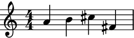>>> notes = randomiser() >>> staff = abjad.Staff(notes) >>> abjad.show(staff)
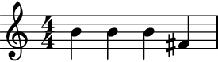To get the result of the last operation, use the property
current_window.>>> notes = randomiser.current_window >>> staff = abjad.Staff(notes) >>> abjad.show(staff)
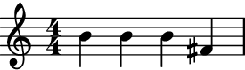
Warning
Unlike the other classes in Auxjad, the very first call of this class will already process the initial container. To disable this behaviour and output the initial container once before randomising its pitches, initialise the class with the keyword argument
process_on_first_callset toFalse.>>> container = abjad.Container(r"c'4 d'4 e'4 f'4") >>> pitches = r"fs' gs' a' b'" >>> randomiser = auxjad.PitchRandomiser(container, ... pitches, ... process_on_first_call=False, ... ) >>> notes = randomiser() >>> staff = abjad.Staff(notes) >>> abjad.show(staff)

>>> notes = randomiser() >>> staff = abjad.Staff(notes) >>> abjad.show(staff)
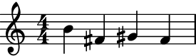len():Applying the
len()function to the randomiser will return the number of pitches inpitches.>>> container = abjad.Container(r"c'4 d'4 e'4 f'4") >>> pitches = r"fs' gs' a' b'" >>> randomiser = auxjad.PitchRandomiser(container, ... pitches, ... ) >>> len(randomiser) 4
>>> container = abjad.Container(r"c'4 d'4 e'4 f'4") >>> pitches = [6, 7, 8, 9, 10, 11, 12] >>> randomiser = auxjad.PitchRandomiser(container, ... pitches, ... ) >>> len(randomiser) 7
- Arguments and properties:
This class has many keyword arguments, all of which can be altered after instantiation using properties with the same names as shown below.
weightstakes alistofint’s orfloat’s representing the weight of each pitch frompitches(their lengths must also match).omit_time_signatureswill remove all time signatures from the output (both areFalseby default).process_on_first_calltoTrueand the random pitch process will be applied on the very first call. Settinguse_tenney_selectortoTruewill make the randomiser useauxjad.TenneySelectorfor the random selection instead ofrandom.choices()(default isFalse).>>> container = abjad.Container(r"c'4 d'4 e'4 f'4") >>> randomiser = auxjad.PitchRandomiser( ... container, ... pitches=r"a b cs' ds' e'", ... weights=[1.0, 2.0, 1.0, 1.5, 1.3], ... omit_time_signatures=True, ... process_on_first_call=True, ... use_tenney_selector=True, ... ) >>> randomiser.pitches <a b cs' ds' e'> >>> randomiser.weights [1.0, 2.0, 1.0, 1.5, 1.3] >>> randomiser.omit_time_signatures True >>> randomiser.process_on_first_call True >>> randomiser.use_tenney_selector True
Use the properties below to change these values after initialisation.
>>> randomiser.pitches = abjad.PitchSegment(r"c' d' e' f'") >>> randomiser.weights = [1, 2, 5, 8] >>> randomiser.omit_time_signatures = False >>> randomiser.process_on_first_call = False >>> randomiser.use_tenney_selector = False >>> randomiser.pitches <c' d' e' f'> >>> randomiser.weights [1, 2, 5, 8] >>> randomiser.omit_time_signatures False >>> randomiser.process_on_first_call False >>> randomiser.use_tenney_selector False
- Rests:
Only pitched logical ties are randomised, rests are left untouched.
>>> container = abjad.Container(r"c'8. d'4 r8 r8. e'16 f'8.") >>> pitches = [6, 7, 8, 9, 10, 11] >>> randomiser = auxjad.PitchRandomiser(container, ... pitches, ... ) >>> notes = randomiser() >>> staff = abjad.Staff(notes) >>> abjad.show(staff)
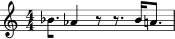- Chords:
Each note of a chord is randomised too.
>>> container = abjad.Container( ... r"<c' e' g'>8. d'4 r8 r8. e'16 <f' a'>8." ... ) >>> pitches = [6, 7, 8, 9, 10, 11] >>> randomiser = auxjad.PitchRandomiser(container, ... pitches, ... ) >>> notes = randomiser() >>> staff = abjad.Staff(notes) >>> abjad.show(staff)
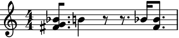The number of notes in a chord stay the same unless there are fewer pitches available in
pitches.>>> container = abjad.Container( ... r"<c' e' g' a'>2 <cs' ds' e' f' g' a' b'>2" ... ) >>> pitches = [6, 7, 8] >>> randomiser = auxjad.PitchRandomiser(container, ... pitches, ... ) >>> notes = randomiser() >>> staff = abjad.Staff(notes) >>> abjad.show(staff)
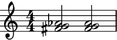use_tenney_selector:Setting
use_tenney_selectortoTruewill make the randomiser useauxjad.TenneySelectorfor the random selection instead ofrandom.choices()(default isFalse).auxjad.TenneySelectorwill raise the chance of a pitch being selected the longer it hasn’t been selected, and will forbid immediate repetitions of pitches. See its documentation for more information.>>> container = abjad.Container(r"c'8 d'8 e'8 f'8 g'8 a'8 b'8 c'8") >>> pitches = r"fs' gs' a' b'" >>> randomiser = auxjad.PitchRandomiser(container, ... pitches, ... use_tenney_selector=True, ... ) >>> notes = randomiser() >>> staff = abjad.Staff(notes) >>> abjad.show(staff)
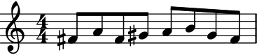weights:Individual pitches can have different weights, defined by the
weightsproperty. It takes alistoffloat’s orint’s.>>> container = abjad.Container(r"c'8 d'8 e'8 f'8 g'8 a'8 b'8 c'8") >>> pitches = r"fs' gs' a' b'" >>> randomiser = auxjad.PitchRandomiser(container, ... pitches, ... weights=[5.0, 2.0, 1.5, 1.0], ... ) >>> notes = randomiser() >>> staff = abjad.Staff(notes) >>> abjad.show(staff)
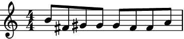weightsanduse_tenney_selector:Non-uniform
weightscan also be used whenuse_tenney_selectoris set toTrue.>>> container = abjad.Container(r"c'8 d'8 e'8 f'8 g'8 a'8 b'8 c'8") >>> pitches = r"fs' gs' a' b'" >>> randomiser = auxjad.PitchRandomiser(container, ... pitches, ... weights=[5.0, 2.0, 1.5, 1.0], ... use_tenney_selector=True, ... ) >>> notes = randomiser() >>> staff = abjad.Staff(notes) >>> abjad.show(staff)
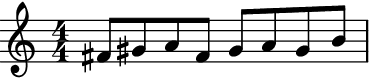- Resetting
weights: Setting
weightstoNonewill reset it back to a uniform distribution.>>> container = abjad.Container(r"c'8 d'8 e'8 f'8 g'8 a'8 b'8 c'8") >>> pitches = r"fs' gs' a' b'" >>> randomiser = auxjad.PitchRandomiser(container, ... pitches, ... weights=[100.0, 1.0, 1.0, 1.0], ... ) >>> notes = randomiser() >>> staff = abjad.Staff(notes) >>> abjad.show(staff)
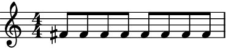>>> randomiser.weights = None >>> notes = randomiser() >>> staff = abjad.Staff(notes) >>> abjad.show(staff)

- Changing
pitches: When using a custom
listofweights, changing thepitchesto a series of new values with the same length will preserve theweightsvalues. If on the other handpitcheschanges in length,weightsis reset toNone(i.e. uniform distribution).>>> container = abjad.Container(r"c'8 d'8 e'8 f'8 g'8 a'8 b'8 c'8") >>> pitches = r"fs' gs' a' b'" >>> randomiser = auxjad.PitchRandomiser(container, ... pitches, ... weights=[100.0, 1.0, 1.0, 1.0], ... ) >>> randomiser.pitches = r"c'' d'' e'' f''" >>> randomiser.pitches <c'' d'' e'' f''> >>> randomiser.weights [100.0, 1.0, 1.0, 1.0] >>> randomiser.pitches = r"c'' d'' e'' f'' g'' a'' b''" >>> randomiser.pitches <c'' d'' e'' f'' g'' a'' b''> >>> randomiser.weights None
Error
Note that
weightsmust always have the same length aspitches, otherwise aValueErrorexception will be raised.>>> container = abjad.Container(r"c'4 d'4 e'4 f'4") >>> pitches = r"fs' gs' a' b'" >>> weights = [1, 1, 5, 2, 3, 4, 8] >>> auxjad.PitchRandomiser(container, pitches, weights=weights) ValueError: 'weights' must have the same length as 'pitches'
output_n():To output several randomised containers at once, use the method
output_n(), inputting the desired number of iterations.>>> container = abjad.Container(r"c'4 ~ c'16 r8. d'4 e'8. r16") >>> pitches = [6, 7, 8, 9, 10] >>> randomiser = auxjad.PitchRandomiser(container, ... pitches, ... ) >>> notes = randomiser.output_n(3) >>> staff = abjad.Staff(notes) >>> abjad.show(staff)
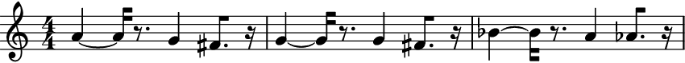- Indicators:
This class preserves indicators.
>>> container = abjad.Container( ... r"c'4\p\< ~ c'8. d'16-.\f e'4--\pp f'8.( g'16)" ... ) >>> pitches = [6, 7, 8, 9, 10, 11, 12] >>> randomiser = auxjad.PitchRandomiser(container, ... pitches, ... ) >>> notes = randomiser() >>> staff = abjad.Staff(notes) >>> abjad.show(staff)
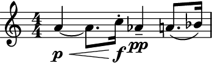- Example:
This class also preserves the time signature structure.
>>> container = abjad.Container( ... r"\time 3/4 c'4 d'2 \time 2/4 e'8 f'8 g'8 a'8" ... ) >>> pitches = r"fs' gs' a' b'" >>> randomiser = auxjad.PitchRandomiser(container, ... pitches, ... ) >>> notes = randomiser() >>> staff = abjad.Staff(notes) >>> abjad.show(staff)
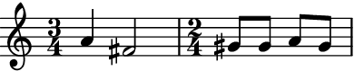omit_time_signatures:To omit time signatures altogether, set
omit_time_signaturestoTrue(default isFalse).>>> container = abjad.Container( ... r"\time 3/4 c'4 d'2 \time 2/4 e'8 f'8 g'8 a'8" ... ) >>> pitches = r"fs' gs' a' b'" >>> randomiser = auxjad.PitchRandomiser(container, ... pitches, ... omit_time_signatures=True, ... ) >>> notes = randomiser() >>> staff = abjad.Staff(notes) >>> abjad.show(staff)
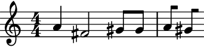- Using as iterator:
The instances of this class can also be used as an iterator, which can then be used in a for loop. Note that unlike the method
output_n(), time signatures are added to each window returned by the randomiser. Use the functionauxjad.mutate.remove_repeated_time_signatures()to clean the output when using this class in this way. It is also important to note that abreakstatement is needed when using this class as an iterator. The reason is that pitch randomisation is a process that can happen indefinitely (unlike some of the other classes in this library).>>> container = abjad.Container(r"\time 3/4 c'4 d'4 e'4") >>> pitches = r"fs' gs' a' b' cs''" >>> randomiser = auxjad.PitchRandomiser(container, ... pitches, ... ) >>> staff = abjad.Staff() >>> for window in randomiser: ... staff.append(window) ... if abjad.get.duration(staff) == abjad.Duration((9, 4)): ... break >>> auxjad.mutate.remove_repeated_time_signatures(staff) >>> abjad.show(staff)
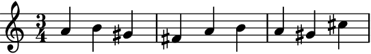
Tip
The functions
auxjad.mutate.remove_repeated_dynamics()andauxjad.mutate.reposition_clefs()can be used to clean the output and remove repeated dynamics and unnecessary clef changes.Methods
__call__()Calls the randomise process, returning an
abjad.Selection__init__(contents, pitches, *[, weights, …])Initialises self.
__iter__()Returns an iterator, allowing instances to be used as iterators.
__len__()Returns the number of available
pitches.__next__()Calls the randomise process for one iteration, returning an
abjad.Selection.__repr__()Returns interpreter representation of
pitches.output_n(n)Goes through
niterations of the pitch randomisation process and outputs a singleabjad.Selection.Attributes
The
abjad.Containerto be shuffled.Read-only property, returns the result of the last operation.
When
True, the output will contain no time signatures.Pitches available for the randomiser.
If
Truethencontentswill be processed in the very first call.If
Truethen the pitches will be selected usingauxjad.TenneySelector, otherwise they are chosen using a uniform random distribution.- __call__() → abjad.select.Selection[source]¶
Calls the randomise process, returning an
abjad.Selection
- __init__(contents: abjad.score.Container, pitches: Union[list, tuple, str, abjad.pitch.segments.PitchSegment], *, weights: Optional[list] = None, omit_time_signatures: bool = False, process_on_first_call: bool = True, use_tenney_selector: bool = False) → None[source]¶
Initialises self.
- __next__() → abjad.select.Selection[source]¶
Calls the randomise process for one iteration, returning an
abjad.Selection.
- property contents: abjad.score.Container¶
The
abjad.Containerto be shuffled.
- property current_window: abjad.select.Selection¶
Read-only property, returns the result of the last operation.
- property omit_time_signatures: bool¶
When
True, the output will contain no time signatures.
- output_n(n: int) → abjad.select.Selection[source]¶
Goes through
niterations of the pitch randomisation process and outputs a singleabjad.Selection.
- property pitches: abjad.pitch.segments.PitchSegment¶
Pitches available for the randomiser.
- property process_on_first_call: bool¶
If
Truethencontentswill be processed in the very first call.
- property use_tenney_selector: bool¶
If
Truethen the pitches will be selected usingauxjad.TenneySelector, otherwise they are chosen using a uniform random distribution.